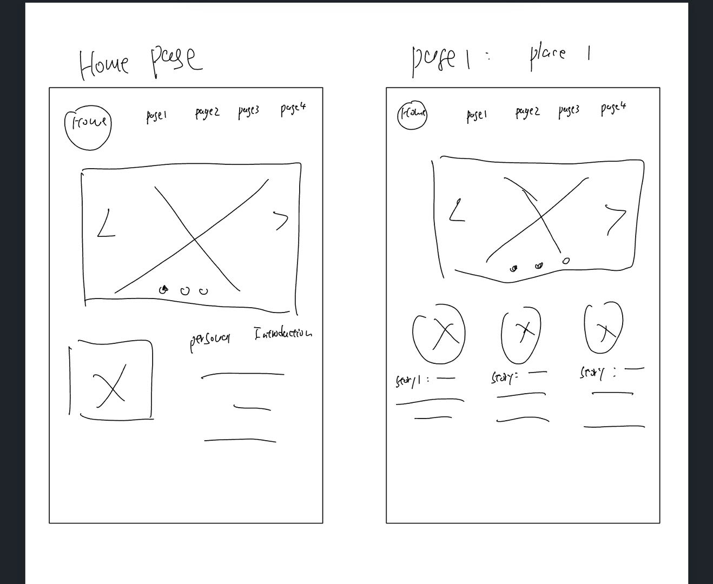
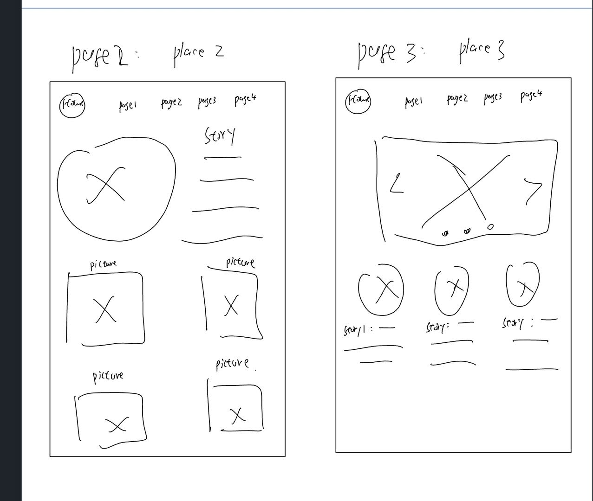
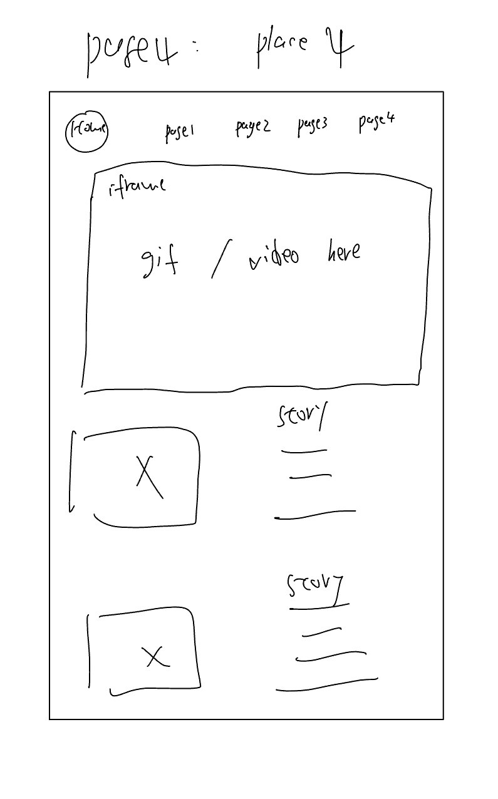

Topics:
This website is going to be my travel sites about some of
different states I have been to during my college time
Audiences:
My audiences will be my firends, classmates, and whoever wants to know more about me and is interested in my
travel history
Designs & Styles:
- My website design will be simple and casual. Basically I will use some elements we learnt in class like
flex boxes,
iframes, and interactive designs to make my websites looks cool and funny.
- Right mow I am thinking make different color schemes on different web pages which correspond to different
places I have been to.
The color theme may be depend on the characteristics of that place.
Here are some travel blogs/websites that inspire my design:
Scopes:
- I am planning to have 4-5 pages including one home page and 3-4 travel pages including pictures, a short
travel summary and some fun memories
Wireframes


